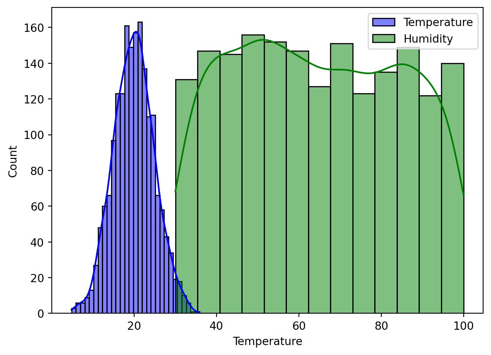
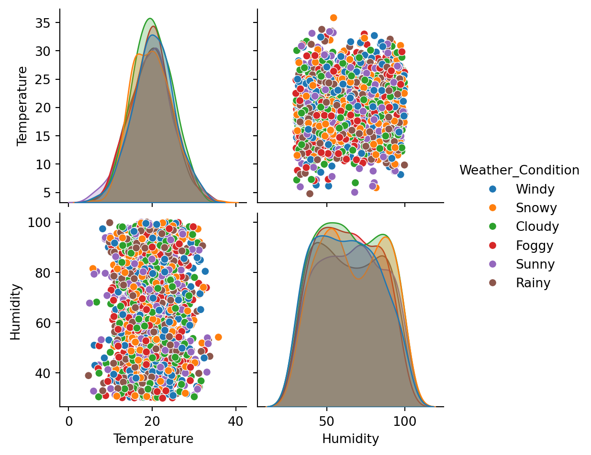
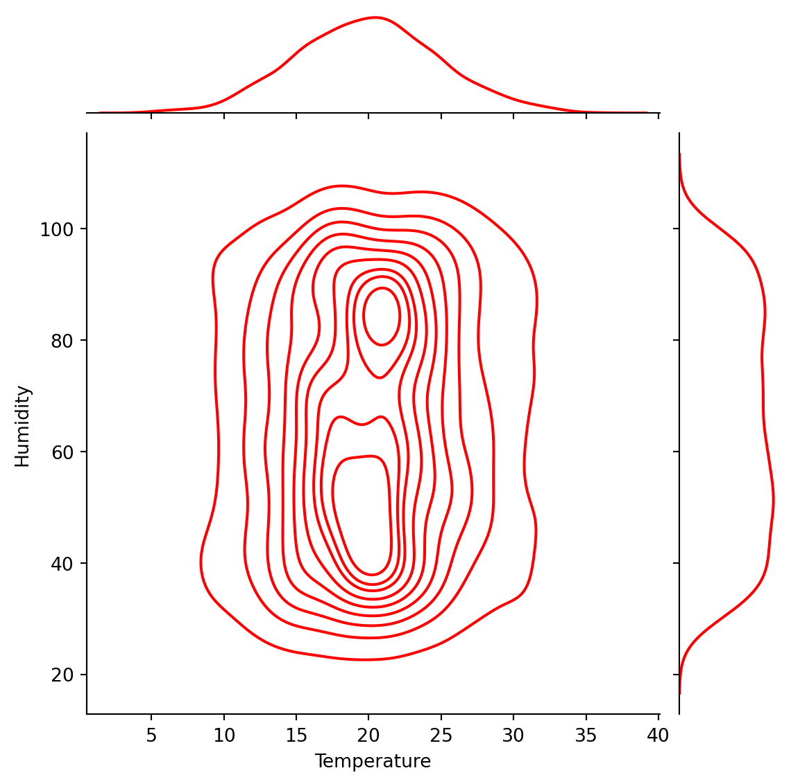
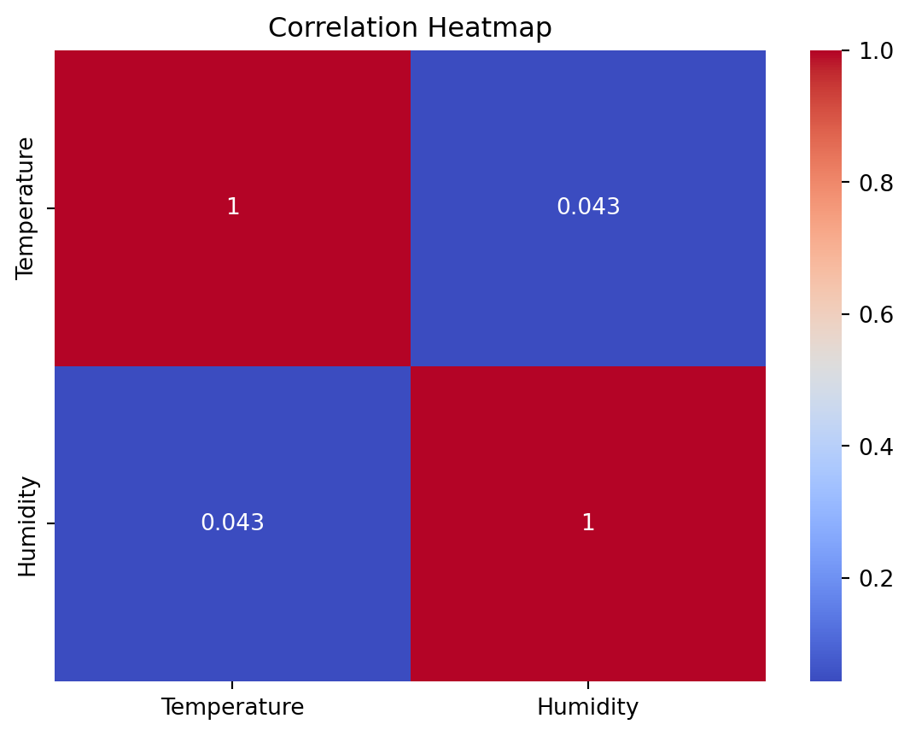

# Importing libraries
import pandas as pd
import numpy as np
import matplotlib.pyplot as plt
import seaborn as sns
from scipy import stats
from scipy.stats import norm
from scipy.stats import expon
from sklearn.model_selection import train_test_split
from sklearn.linear_model import LinearRegression
from sklearn.metrics import mean_squared_error
# Load the dataset
weather_df = pd.read_csv('weather_data.csv')
weather_df['Date'] = pd.to_datetime(weather_df['Date'])Probability Theory and Random Processes
machine learning
Gaining insights on weather data with Data Science and Machine Learning
Gaining insights on weather data with Data Science and Machine Learning
In this blog post I will discuss a few examples of probability in machine learning. If you are new to probability, I recommend one of great textbooks that cover the topic and are available for free online, such as Think Bayes by Allen Downey and Bayes Rules! by Alicia A. Johnson, Miles Q. Ott, and Mine Dogucu.
Classification algorithms algorithms can estimate \(n \times k\) class membership probabilities for each dataset, where n is the number of data points in the dataset and k is the number of classes in the training dataset. Similarly, the Gaussian Mixtures clustering algorithm can generate \(n \times k\) cluster label probabilities.
Besides a data point and the Gaussian Mixtures models can estimate cluster membership probability. point , especially Logistic Regression and Naive Bayes. Every classification algorithm can estimate probabilities of belonging to each class.
\(\Huge P(A\vert B)={\frac {P(B\vert A)P(A)}{P(B)}}\)
Understanding Weather Forecasting with the help of Probability theory and Random Processes
Introduction
Machine learning plays a pivotal role in understanding and predicting various natural phenomena, and weather forecasting is no exception. To harness the power of machine learning for weather data analysis, it is essential to have a solid foundation in random processes and probability theory. These fundamental concepts are the building blocks that enable us to model the inherent uncertainty and variability present in weather data.
Weather data, such as temperature, humidity, wind speed, and precipitation, exhibit random behavior due to the complex interplay of atmospheric processes. Random processes are mathematical models used to describe the evolution of these variables over time. These processes capture the idea that weather conditions are not deterministic but rather stochastic, influenced by a multitude of factors, including geographical location, time of year, and local phenomena.
Probability theory, on the other hand, provides the framework to quantify and reason about uncertainty in weather data. It allows us to assign probabilities to different weather outcomes and make informed predictions based on observed data. For example, we can calculate the probability of rain on a given day or estimate the likelihood of extreme weather events, such as hurricanes or heatwaves, occurring in a specific region.
Machine learning techniques, such as regression, classification, and time series analysis, heavily rely on probabilistic and random process models to extract meaningful insights from weather data. By incorporating these techniques, we can build predictive models that not only provide accurate weather forecasts but also account for uncertainty, enabling better decision-making in various applications like agriculture, transportation, and disaster management.
In this context, the weather dataset you are using serves as a valuable source of information for exploring and applying these concepts. By understanding random processes and probability theory, you can leverage machine learning to unlock the potential hidden within weather data, improving the accuracy and reliability of weather forecasts and facilitating data-driven decision-making in various sectors that rely on weather information.
Data Loading and Basic Visualization
Exploratory Data Analysis
#Exploratory Data Analysis
#Histograms and KDE (Kernel Density Estimation) plots for Temperature and Humidity.
sns.histplot(weather_df['Temperature'], kde=True, color='blue', label='Temperature')
sns.histplot(weather_df['Humidity'], kde=True, color='green', label='Humidity', alpha=0.5)
plt.legend()
plt.show()
# Pair Plot to visualize all variables together.
sns.pairplot(weather_df, hue='Weather_Condition')
plt.show()
Probability Distributions
#Normal Distribution Fit for Temperature.
sns.histplot(weather_df['Temperature'], kde=False, color='blue', label='Temperature')
# Fitting a normal distribution and plotting it
mean, std = norm.fit(weather_df['Temperature'])
xmin, xmax = plt.xlim()
x = np.linspace(xmin, xmax, 100)
p = norm.pdf(x, mean, std)
plt.plot(x, p * max(weather_df['Temperature'].value_counts()), 'k', linewidth=2)
title = "Fit results: mean = %.2f, std = %.2f" % (mean, std)
plt.title(title)
plt.show()
#Exponential Distribution Fit for Humidity.
from scipy.stats import expon
# Plotting histogram
sns.histplot(weather_df['Humidity'], kde=False, color='green', label='Humidity')
# Fitting an exponential distribution and plotting it
params = expon.fit(weather_df['Humidity'])
xmin, xmax = plt.xlim()
x = np.linspace(xmin, xmax, 100)
p = expon.pdf(x, *params)
plt.plot(x, p * max(weather_df['Humidity'].value_counts()), 'k', linewidth=2)
plt.show()
Time Series Analysis
Temperature Trend over Time.
#Checking the temperature trned against time weather_df.set_index(‘Date’)[‘Temperature’].plot() plt.title(“Temperature Trend Over Time”) plt.ylabel(“Temperature”) plt.show()
**Probability Theory in Action**
::: {.cell execution_count=7}
``` {.python .cell-code}
#Conditional Probability: Probability of High Humidity given Rainy Weather.
high_humidity = weather_df['Humidity'] > 80
rainy_days = weather_df['Weather_Condition'] == 'Rainy'
prob_high_humidity_given_rain = np.mean(high_humidity[rainy_days])
print(f"Probability of High Humidity given Rainy Weather: {prob_high_humidity_given_rain}")Probability of High Humidity given Rainy Weather: 0.27586206896551724:::
#Joint Distribution: Temperature and Humidity.
sns.jointplot(data=weather_df, x='Temperature', y='Humidity', kind='kde', color='red')
plt.show()
Correlation Analysis
#Correlation Heatmap
# Selecting only numerical columns for correlation analysis
numerical_weather_df = weather_df.select_dtypes(include=[np.number])
# Plotting the correlation heatmap
sns.heatmap(numerical_weather_df.corr(), annot=True, cmap='coolwarm')
plt.title("Correlation Heatmap")
plt.show()
Linear Regression for Temperature Prediction
#Model Training and Evaluation.
# Preparing data for linear regression
from sklearn.linear_model import LinearRegression
from sklearn.metrics import mean_squared_error
from sklearn.model_selection import train_test_split
# Preparing data for linear regression
X = weather_df[['Humidity']]
y = weather_df['Temperature']
X_train, X_test, y_train, y_test = train_test_split(X, y, test_size=0.2, random_state=0)
# Training the model
model = LinearRegression()
model.fit(X_train, y_train)
# Making predictions
y_pred = model.predict(X_test)
# Plotting actual vs predicted values
plt.scatter(X_test, y_test, color='blue', label='Actual')
plt.scatter(X_test, y_pred, color='red', label='Predicted')
plt.xlabel('Humidity')
plt.ylabel('Temperature')
plt.title('Actual vs Predicted Temperature')
plt.legend()
plt.show()
# Model evaluation
mse = mean_squared_error(y_test, y_pred)
print("Mean Squared Error:", mse)
Mean Squared Error: 24.010797366937965Markov Chain for Weather Condition Transitions
#Let's simulate a simple Markov chain to model the transitions between different weather conditions.
import pandas as pd
# Calculating transition probabilities
weather_conditions = weather_df['Weather_Condition'].unique()
transition_matrix = pd.DataFrame(index=weather_conditions, columns=weather_conditions).fillna(0)
for (prev, curr) in zip(weather_df['Weather_Condition'], weather_df['Weather_Condition'][1:]):
transition_matrix.at[prev, curr] += 1
# Normalizing the rows to sum to 1
transition_matrix = transition_matrix.div(transition_matrix.sum(axis=1), axis=0)
# Display the transition matrix
print(transition_matrix) Windy Snowy Cloudy Foggy Sunny Rainy
Windy 0.155116 0.165017 0.161716 0.194719 0.181518 0.141914
Snowy 0.196667 0.166667 0.153333 0.166667 0.156667 0.160000
Cloudy 0.144543 0.182891 0.171091 0.165192 0.188791 0.147493
Foggy 0.199346 0.124183 0.199346 0.147059 0.140523 0.189542
Sunny 0.167247 0.167247 0.222997 0.167247 0.128920 0.146341
Rainy 0.131488 0.179931 0.211073 0.166090 0.141869 0.169550This code calculates the probabilities of transitioning from one weather condition to another. It’s a basic form of a Markov chain.
Monte Carlo Simulation for Temperature Extremes
#Use Monte Carlo simulation to estimate the probability of extreme temperature events.
np.random.seed(0)
num_simulations = 10000
extreme_temp_count = 0
extreme_temp_threshold = 30 # Define what you consider as extreme temperature
for _ in range(num_simulations):
simulated_temp = np.random.choice(weather_df['Temperature'])
if simulated_temp > extreme_temp_threshold:
extreme_temp_count += 1
probability_of_extreme_temp = extreme_temp_count / num_simulations
print(f"Probability of Extreme Temperature (> {extreme_temp_threshold}°C): {probability_of_extreme_temp}")Probability of Extreme Temperature (> 30°C): 0.0226This Monte Carlo simulation randomly samples temperatures from the dataset and calculates the probability of encountering temperatures above a certain threshold.
Obtain the logistic function mathematically
Step 1. Write out the linear regression equation
\(\Huge y=\beta_0+\beta_1 x_1+...+\beta_n x_n\)
Step 2. The logistic regression equation is the same as above except output is log odds
\(\Huge log(odds)=\beta_0+\beta_1 x_1+...+\beta_n x_n\)
Step 3. Exponentiate both sides of the logistic regression equation to get odds
\(\Huge odds=e^{\beta_0+\beta_1 x_1+...+\beta_n x_n}\)
Step 4. Write out the probability equation
\(\Huge p=\frac{odds}{1+odds}\)
Step 5. Plug odds (from step 3) into the probability equation
\(\Huge p=\frac{e^{\beta_0+\beta_1 x_1+...+\beta_n x_n}}{1+e^{\beta_0+\beta_1 x_1+...+\beta_n x_n}}\)
Step 6. Divide the numerator and denominator by the odds (from step 3)
\(\Huge p=\frac{1}{1+e^{-(\beta_0+\beta_1 x_1+...+\beta_n x_n)}}\)
\(\Huge P(A\vert B)={\frac {P(B\vert A)P(A)}{P(B)}}\)
Conclusion
This analysis shows more sophisticated ways of applying probability theory and random processes to the weather dataset, providing insights into weather patterns and temperature predictions.
Summarized the findings from the above analysis. Discussed the relevance of these probabilistic models in understanding weather patterns.